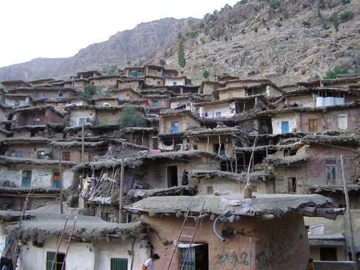
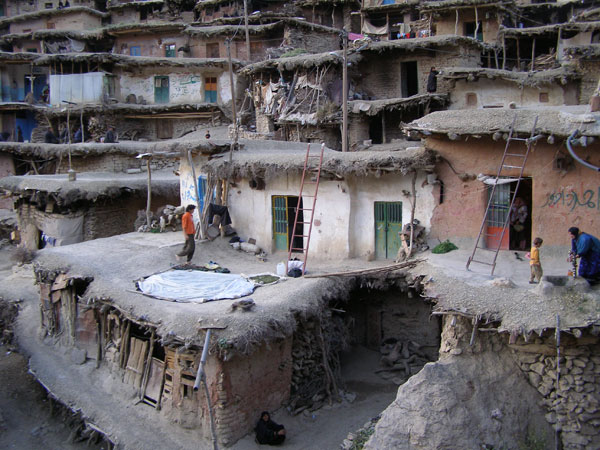
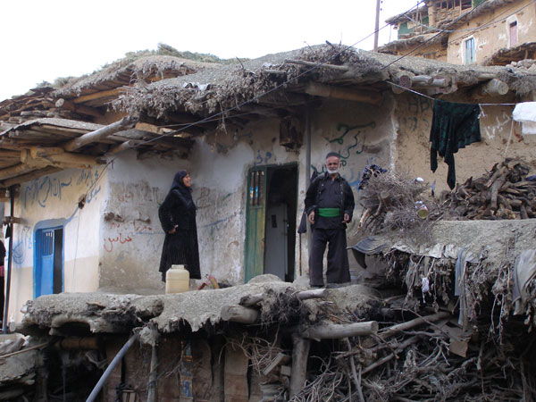
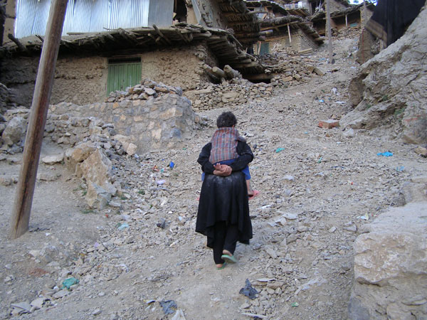
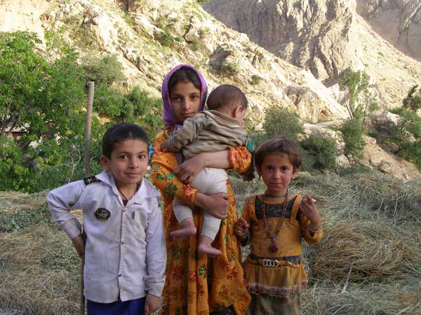
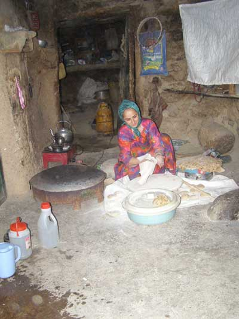
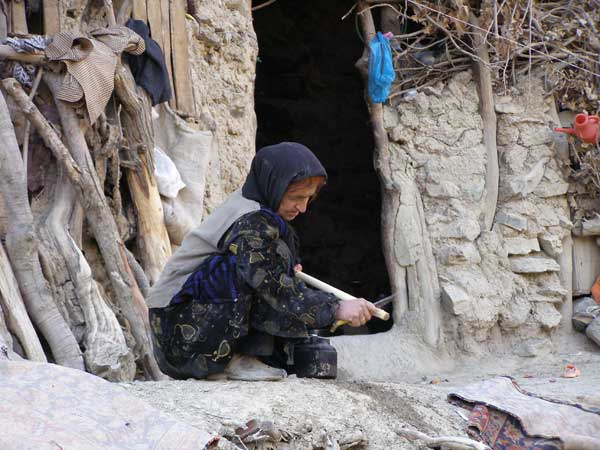
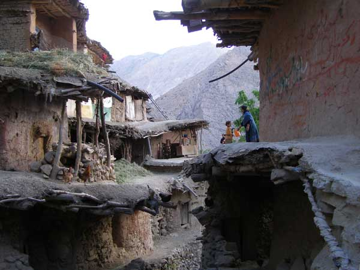

|
|

با زنان ِ همیشه در راه / گزارش سفر، مریم زندی
جمعه21 مرداد 1390
تغییر برای برابری - سفرنامه نویسی از انواع نوشتاری و امکانی است برای آشنایی بیشتر با زندگی مردمان. توصیف و مشاهده زندگی زنان، دردها، رنج ها، شادی ها، تجربه آنها از مناسبات تبعیض آمیز و مبارزه روزمره آنان در زندگی بخشی از سفرنامه هایی است که زنان نقطه کانونی آنها هستند.
مریم زندی از فعالان حقوق زنان در ایران از گردشگران پرسابقه نیز هست. وی سفرهای متعددی به مناطق مختلف ایران داشته و دارد و در هر سفر یادداشت ها و تصاویری از این سفرها گرد آورده است و به ثبت لحظه هایی از زندگی زنان پرداخته است.
گزارش های سفر او به تدریج در سایت تغییر برای برابری بازتاب خواهد یافت. دراین سفر به همراه مریم به روستای "سرآقا سید" می رویم و از دریچه نگاه او به این روستا می نگریم:

هميشه كوچ عشاير را به همراه دام ها وكودكان و زنان با لباس هاي رنگارنگ در عكس ها و مجلات ديده بودم و دوست داشتم از نزديك زندگي اين زنان را ببينم. می خواستم بدانم به چه فكر مي كنند؟ "هميشه در راه بودن" براي آنها هم جالب است؟ آيا مانند ما از دشت ها و كوه ها لذت مي برند؟ آيا دوست دارند اسكان دائم داشته باشند؟ خسته نمي شوند؟ ...به همین خاطر، اوايل بهار 1389 به كوهپايه هاي زرد كوه رفتيم. سرچشمه هاي؛ رود هاي خروشان ، منطقه اي پر آب و چشمه هاي بسيار كه تمام دشت ها و كوه هايش سبز است.
از شهر چهل گرد دامنه زرد كوه را دور زديم و به سمت "روستاي سر آقا سيد" راه پر و پيچ و خم و شيب دار رهسپار شديم. در راه به غار يخي و محل استقرار عده اي از عشاير رسيديم. آنها كنار رود چادر زده بودند. در ميان دشت چادرهايي سياه بر پا و در مرتع گله هاي بز و گوسفند مشغول چرا و كودكاني كه مراقب آنان بودند.

با خودمان دارو و كمي شكلات و شيريني براي بچه ها همراه داشتيم. ميني بوس را نگه داشتیم. عده ای براي عكاسي به ميان گله رفتند، بچه ها هم به ديدن سگ گله رفتند.سگ هم اجازه داد تا هر چه كودكان مي خواهند او را نوازش كنند.

يكي از زنان با لباس رنگارنگش از سياه چادر بيرون آمد. سلام و عليكي با او كرديم. ما را خيلي صميمانه به چادر دعوت كرد. دور تا دور چادر چيزي نبود به جز رختخواب و چند بالش براي پشتي.
پرسيدم كل زندگي تان همينه ؟
 بله.
بله.
سراغ همسرش را گرفتيم.
 براي كارگري به شهر كرد رفته.
براي كارگري به شهر كرد رفته.
 در اين دشت چند ماه مي مانيد ؟
در اين دشت چند ماه مي مانيد ؟
 سه ماه تمام.
سه ماه تمام.
 نمي ترسيد؟
نمي ترسيد؟
 از چي بترسيم!؟
از چي بترسيم!؟
شش بچه داشت دو دختر وچهارپسر
 اين بچه ها كجا درس مي خوانند؟
اين بچه ها كجا درس مي خوانند؟
 درس نمي خوانند. دو پسر بزرگم كه شانزده ساله و 18 ساله اند با شوهرم براي كارگري به شهررفته اند.
درس نمي خوانند. دو پسر بزرگم كه شانزده ساله و 18 ساله اند با شوهرم براي كارگري به شهررفته اند.
برايمان لواشك و كمي قرقوروت و مقداري كشك و سبزي هاي خشك كرده آورد ما هم به رسم قدرداني كمي داروهايي كه نياز داشت به او داديم. بيرون از چادر ديگي مسي پر از شير در حال جوشيدن روي اجاق بود.

دوستان گفتند: چه دشت هاي سبز و زيبايي خوش به حالتان! در جوابمان گفت: هشت ماه از سال اين جا چند متربرف روي زمين است. هيچكس نمي تواند از لانه اش بيرون بيايد. بايد زمستان بياييد و ببينيد زندگي اين جا چه طوري است سرما و يخ بندان.
از او خداحافظي كرديم. برايمان دست تكان مي داد. اجازه داد به رسم يادگاري عكسي با او بگيرم . سي ساله بود و سيه چرده و چين و چروك هاي عميقي به صورت داشت. توگويي زني پنجاه ساله را مي ديدي. موهاي زيباي سياهي داشت كه از دو طرف روسري سياهش بيرون زده بود. و دست هايي سياه و استخواني با ناخن هاي حنايي كه دست هاي كار و زحمت بودند.
حرف هايش ما را به فكرفرو برد. اگر نياز به دكتر و دارو داشته باشند؟ براي زايمان چي ؟ اگر بچه طبيعي به دنيا نياید چه ...؟ زير چند متر برف؟!
چهار ساعت پيچ هاي جاده خاكي را سر بالايي رفتيم و رسيديم به روستاي "سر آقا سيد". روستايي كه از خيلي ها شنيده بوديم ماسوله ي چهار محال و بختياري است. از چهل گرد تا اين روستا 50 كيلومتر فاصله است. جمعيتي بالغ بر 2000 نفر و خانه ها يي از سنگ و خشت و چوب و بافتي قديمي و سنتي .
مي گفتند از قديم اين روستا محل اسكان عشاير بوده.. و هشت ماه از سال كلا ارتباط روستا با شهر قطع مي شود. روستايي پلكاني كه بر شيب تند كوه بلند آرميده است. در ابتداي شيب، امامزاده آقا سيد واقع شده است.
روستا داراي كوچه هاي باريك و شيب دار سنگي است. و درختان بلند و كهن تبريزي كه سر به آسمان كشيده اند. از بالا دست همه روستا را مي توان رصد كرد حتي درون خانه ها را.
ميني بوس ما وارد روستا كه مي شود. كودكان زيادي دور ما جمع مي شوند حتي زن ها از روي ايوان خانه ها كه پشت بام خانه ديگري است به ما خيره می شوند منظره عجيبي است. معلوم است. مهمانان خيلي كمي به اين روستا مي آيند. همه متعجب اند.

روستاي سر آقا سيد به دليل كمبود زمين كشاورزي و صخره اي و كوهستاني بودن و شيب هاي تند محروم و فقير باقي مانده است. خانه هاي كمي لوله كشي آب دارند و بقيه از آب چشمه ها استفاده مي كنند. زنان به ناچار هر ساله در فصل بهار چندين گوني موسير، آويشن، تره كوهي، كنگر و شينگ مي چيند و جهت فروش و امرار معاش آنها را روي بامهايشان خشك مي كنند و زنان مسن با نخ هاي پشمي رنگي جوراب وكلاه و آزيين هاي داخل چادر عشاير را براي فروش مي بافند.

در چهره بچه ها فقرو نداري وسوء تغذيه وبهداشت آزار دهنده است. پاپوششان اغلب دمپايي هاي پاره و كهنه است. فقط به ما نگاه مي كنند و ما هم شكلات و شيريني تعارف شان می کنیم. کم کم با هم آشنا می شویم .
از جمله با گل اندام که اسم زیبایش همچنان در خاطر مانده است.
مي پرسم اين جا مدرسه دارد؟ پسرک ها در عوض پاسخ می دهند:
 آره يك مدرسه داريم. ابتدايي اما فقط دخترا يكي دو كلاس مي آيند.
آره يك مدرسه داريم. ابتدايي اما فقط دخترا يكي دو كلاس مي آيند.
 دبستان تمام شد چي؟ راهنمايي يا دبيرستان نداريد ؟
دبستان تمام شد چي؟ راهنمايي يا دبيرستان نداريد ؟
مي خندند، سربه سرمان مي گذارند و مي گويند خوب ديگه بسه!
روي بام ها زنان زيادي سيه پوش نشسته اند و از نوع نشستشان معلوم است كه مشغول گفتگوي مهمي هستند.

از بچه ها مي پرسيم چه خبراست؟ آنها چه مي كنند ؟ مي گويند دارند حرف مي زنند براي فردا!!
صداي شيون و زاري ما را به خود جلب مي كند از بچه ها مي پرسيم صدا از كجاست؟ قبرستان ده را نشانمان مي دهند. اولین روستا روي بلندي. صداي گريه و شيون زن ها بيشتر مي شود. به طرف آنان مي رويم. زنان يكپارچه سياه پوشند و صورت كنان گريه مي كنند. ما هم كنار آنها مي نشينيم. صورت تك تكشان را نگاه مي كنم. چهره چند تايي شان خوني است و گونه هاي خود را كنده اند. بعضي ها توي سرشان مي زنند. از قبرستان كنار مي آييم. خورشيد مي رود كه غروب كند. از بالا روستا را نگاه مي كنم. دختركي نوجوان كه خواهركوچكش را بغل كرده آرام گريه مي كند. بغلش مي كنم.
از صنوبرمی پرسم : چرا گريه مي كني ؟
 چهلم مادرم است .مادرم سلطان و خديجه خانم و پريناز را آب برده .
چهلم مادرم است .مادرم سلطان و خديجه خانم و پريناز را آب برده .
 كجا ؟چرا ؟
كجا ؟چرا ؟
 يك ماه و خورده اي پيش آنها براي سبزي چيني به كوه ها زدند. اما غروب كه مي خواستند برگردند سيل رودخانه را پر كرد. مادرم و آن دو شلوارهايشان را بالا مي زنند كه از روخانه بگذرند اما آب زيادي بالا آمده بود. مادرم را با خود مي برد و خديجه خانم خواسته مادرم را نجات دهد كه او را هم آب مي برد و و فري ناز كه به نجات مادرش مي رود او را هم مي برد. فقط جنازه يكي شان را كنار سنگي پيدا كرديم . آن دو را آب برده.!
يك ماه و خورده اي پيش آنها براي سبزي چيني به كوه ها زدند. اما غروب كه مي خواستند برگردند سيل رودخانه را پر كرد. مادرم و آن دو شلوارهايشان را بالا مي زنند كه از روخانه بگذرند اما آب زيادي بالا آمده بود. مادرم را با خود مي برد و خديجه خانم خواسته مادرم را نجات دهد كه او را هم آب مي برد و و فري ناز كه به نجات مادرش مي رود او را هم مي برد. فقط جنازه يكي شان را كنار سنگي پيدا كرديم . آن دو را آب برده.!
 چند خواهر و برادريد؟
چند خواهر و برادريد؟
 هفت خواهر وبرادر.
هفت خواهر وبرادر.
 زنها آن دور روي پشت بام چه مي كنند ؟
زنها آن دور روي پشت بام چه مي كنند ؟
 مي خواهند كارها را براي فردا تقسيم كنند. چند نفر را براي نگه داري بچه ها مي ذارن و خودشون مي رن دنبال سبزي چيني .
مي خواهند كارها را براي فردا تقسيم كنند. چند نفر را براي نگه داري بچه ها مي ذارن و خودشون مي رن دنبال سبزي چيني .
خورشيد بي رمق مي رود و كم كم تاريكي همه جا را فرا مي گيرد. زنان كه همگي روي سرشان دستار(كت) مشكي بسته اند ، يكي يكي از پاي قبرها بلند مي شوند و از سراشيبي به روستا مي روند. هيچ صدايي نمي آيد. جز صداي چند سگ .
چند ساعت بعد زن ها رختخواب ها را پهن مي كنند و صداي سكوتشان دره فرا می گيرد.
چادرهايمان را پايين تر از قبرستان بنا مي كنيم و به صداي تاريكي شب گوش مي دهيم. كم كم تنها مغازه روستا هم چراغ هايش را خاموش مي كند.
در تاريكي با يك نور شمع نشسته ايم و به صداي روستا و رودخانه اي كه هم مهربان است و هم خشن گوش مي سپاريم. دو زن از دل تاريكي شب وارد روستا مي شوند. گام هايشان چون كيسه هاشان سنگين است. مي گوييم خسته نباشيد و جواب مي شنويم كه "مانده نباشيد". آنها وارد سرازيري روستا مي شوند.

نيمه هاي شب مي خوابيم و صبح خيلي زود با صدایی بيدار مي شويم. صداي پايي نزدیک مي آيد. از چادر بيرون مي زنم. از كنارمان چند زن كه سر تا پا سياهپوشند ،حتي گالش هايشان هم، از روستا خارج مي شوند. گوني هاي بزرگي با چند طناب به پشتشان انداخته اند. بعضي ها ميانسال هستند و سه دختر جوان همراهيشان مي كنند.
 اين موقع صبح مي رويد كي برمي گرديديد؟
اين موقع صبح مي رويد كي برمي گرديديد؟
 تا آخر شب برمي گرديم.
تا آخر شب برمي گرديم.
 غذا چه مي كنيد ؟
غذا چه مي كنيد ؟
 كمي نان و پنير داريم.
كمي نان و پنير داريم.
يك بطري آبي و مقداري ميوه تعارفشان مي كنيم.
پس از صبحانه راهي جاده شيب دار، پر پيچ وخم و خاكي مي شويم. كمي پايين تر؛ از دور زنان عشاير را مي بينيم كه با لباس هاي رنگارنگ به دنبال گله در دشت روانند.